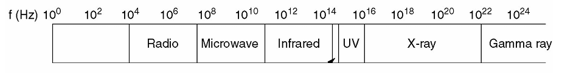
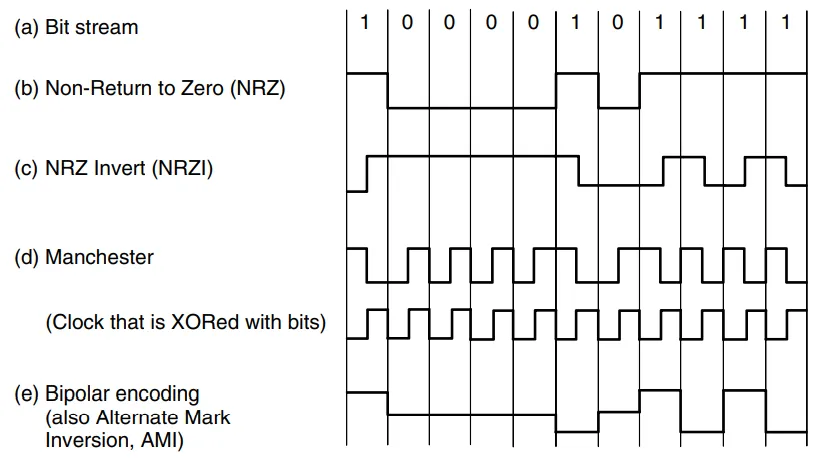
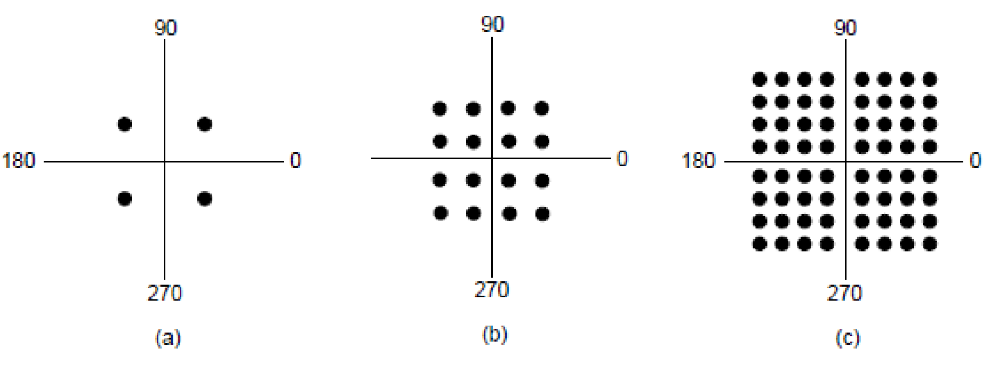
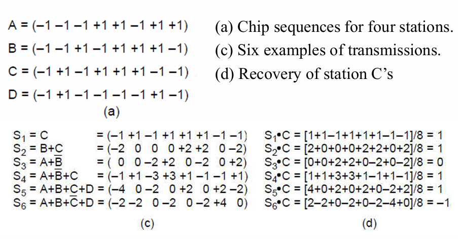

物理层¶
约 10113 个字 3 行代码 4 张图片 预计阅读时间 34 分钟
物理层要解决的是：怎样把一串比特变成信号，经过传输介质，再让另一端把比特读出来。 它关心电压、频率、光脉冲、接口和时序；至于这些比特组成什么帧、发给哪个地址，则交给上面的层处理。
以下的文档中，我使用 “+” 表示 408 考纲补充内容。
1. 物理层与通信基础¶
1.1 物理层提供什么¶
在我们的参考模型中，物理层位于最底层：它定义电气、时序等接口，使比特能够以信号的形式沿信道传输。链路层交下来的是比特流，物理层负责把它实际送出去。
物理层接口的四种特性 +
接口标准需要让两端设备对下面四件事达成一致。
| 特性 | 规定什么 | 怎样区分 |
|---|---|---|
| 机械特性 | 接口的形状、尺寸、引脚数量与排列、固定方式 | 插头长什么样，能不能插上 |
| 电气特性 | 信号的电压范围、阻抗等电气参数 | 线上用多大的电压 |
| 功能特性 | 各条信号线的用途，以及某条线上某种电平的含义 | 哪根线传数据，哪个信号表示「准备好了」 |
| 规程特性（过程特性） | 完成某项功能时，各种信号或事件出现的顺序 | 谁先请求，谁后响应，何时开始和结束 |
总结来说，电气特性看数值，功能特性看含义，规程特性看顺序。
1.2 数据、信号与信道 +¶
数据是要传递的内容，信号是数据在传输时的物理表现。例如，一串 0101 是数据，网线上的电压变化或光纤里的光脉冲是信号。
- 模拟数据／模拟信号：取值连续，例如话筒输出的语音电压。
- 数字数据／数字信号：用有限个离散值表示，例如二进制比特，以及用高、低电平表示比特的信号。
数字信号在真实线路上也会经历上升、下降和失真；这里说「离散」，是指接收端把它判成有限种状态。
一个简化的通信系统可以写成：
- 信源产生要发送的数据，信宿接收最终的数据。
- 发送器把数据变成适合信道传输的信号，接收器从信号中恢复数据。
- 信道是信号传输的通路。传输介质是承载信号的实际材料或空间，例如双绞线、光纤、自由空间。一条介质可以通过复用承载多条信道。
- 噪声是叠加在有用信号上的干扰，会影响接收端判断。
按信道允许通过的频率，常见的两种模型是：
- 低通信道：可以通过从接近零频到某个上限的频率成分，适合讨论基带信号。
- 带通信道：只允许某个频率区间内的成分通过，需要把信号搬到相应频段。
1.3 单工、半双工与全双工¶
按通信方向区分单工、半双工和全双工，判断时只看两个方向能否发送，以及能否同时发送。
| 通信方式 | 数据传输方向 | 例子 |
|---|---|---|
| 单工 Simplex | 只能单向传输 | 广播电台向收音机发送 |
| 半双工 Half-duplex | 两端都能发送，但要轮流 | 对讲机 |
| 全双工 Full-duplex | 两端可以同时发送 | 电话通话 |
串行／并行，同步／异步 +
- 串行传输：比特按先后顺序发送；并行传输：多位同时在多条线上发送。计算机网络中长距离传输通常采用串行方式。
- 异步传输：通常以字符为单位，字符前后加起始位、停止位，字符之间的间隔可以变化。例如 8 位数据、1 位起始位、1 位停止位且无校验时，有效数据占 \(8/10=80\%\)。
- 同步传输：以连续的数据块传输，收发两端需要保持比特时钟同步，再识别数据块的边界。时钟可以另线传送，也可以从信号跳变中恢复。
2. 传输介质¶
介质决定信号沿什么路径走，也会影响带宽、衰减、干扰和传输距离。
带宽能决定时延吗？
想象我们用一种特别的方式传递数据：把大量数据写进磁带或可移动介质，再把它们运到目的地。一次运送的数据足够多时，平均吞吐量可以很高，但第一份数据到达则可能要等一天。
这说明“一次能搬很多数据”和“数据能很快到达”完全是两码事，也就是说带宽和时延是两个独立的量。
2.1 导引型传输介质¶
双绞线¶
双绞线（ twisted pair ）由两根相互绝缘的铜线绞合而成。「绞」起来有助于减轻外界电磁干扰和相邻线对之间的串扰。它成本低、铺设方便，常用于电话用户线和以太网。
- UTP：非屏蔽双绞线。
- STP：屏蔽双绞线，在绞合的基础上增加屏蔽。
- Cat 3、Cat 5 等类别的双绞线，其绞合程度和传输能力有所不同。类别、长度和所用以太网标准要一起考虑。
- 距离变长后信号会衰减，需要合适的中继设备恢复信号。
同轴电缆¶
同轴电缆（ coaxial cable ）从里向外依次是中心导体 → 绝缘层 → 外导体／屏蔽层 → 保护外套。屏蔽使它具有较好的抗干扰能力，曾用于长途通信和早期以太网，也用于有线电视接入。
电力线¶
电力线通信（ power-line communication ）利用原有供电线路传输通信信号，例如抄表和室内联网。它能复用已有线路，但线路原本用于供电，通信时要面对电器开关等带来的噪声。
光纤¶
光纤（ optical fiber ）利用光传输信息。光通信系统的基本组成是：光源 → 光纤 → 光检测器。发送端用 LED 或半导体激光器发光，接收端用光电检测器恢复电信号。
光纤由纤芯、包层和保护层组成。纤芯折射率高于包层，满足条件的光在界面发生全反射，沿光纤向前传播。
| 类型 | 传播特点 | 主要区别 |
|---|---|---|
| 多模光纤 Multimode | 支持多个传播模式 | 不同模式到达时间不同，模间色散较明显 |
| 单模光纤 Single-mode | 只支持一个传播模式 | 减少模间色散，适合更远距离和更高速率 |
光在光纤中的衰减随波长变化，常用的三个光通信波段以 \(0.85\,\mu\mathrm{m}\)、\(1.30\,\mu\mathrm{m}\)、\(1.55\,\mu\mathrm{m}\) 为中心。连接光纤可以使用连接器、机械接续或熔接。
与铜线相比，光纤的主要优点是带宽大、衰减小、不受电磁干扰、轻且细；接续和光电接口的要求更高。比较介质时，不要只看材料本身，还要看两端收发设备。
2.2 无线传输¶
电磁波的频率 \(f\)、波长 \(\lambda\) 与传播速度满足 \(v=f\lambda\)；在真空中 \(v=c\approx3\times10^8\,\mathrm{m/s}\)。

| 类型 | 传播特点 | 主要问题或用途 |
|---|---|---|
| 无线电 Radio | 低频段常有较好的绕射、穿透能力；可向多个方向传播 | 广播和移动通信；共享频谱会相互干扰 |
| 微波 Microwave | 通常按视距传播，可用定向天线集中能量 | 地面中继、蜂窝通信；注意遮挡、多径衰落和雨衰 |
| 红外 Infrared | 难穿透墙壁，常局限在室内 | 遥控、短距离通信；易受遮挡和环境光影响 |
| 自由空间光通信 Lightwave | 激光方向性强，收发端需要对准 | 楼宇间通信；气流、雾和遮挡会影响链路 |
多径衰落：同一个信号经反射等不同路径到达接收端，叠加后可能相互削弱。视距传播则要求收发天线之间有适合的直达路径。
扩频把信号分布到较宽的频带，而不是只占一小段窄频带。
- 跳频扩频 FHSS：收发双方按约定序列切换载频。
- 直接序列扩频 DSSS：用高速码片序列展开原始数据，接收端用对应序列恢复。
- 超宽带 UWB：使用很宽的频带传输。
2.3 通信卫星¶
我们可以把通信卫星看成「天空中的微波中继站」。地面站发出上行信号，卫星转发器接收后处理，再以下行信号送回地面；上、下行使用不同频段以减小相互干扰。
| 轨道类型 | 位置与运动特点 | 对通信的影响 |
|---|---|---|
| GEO ：地球静止轨道 | 位于赤道上空约 \(35\,800\,\mathrm{km}\)，相对地面近似静止 | 覆盖广、地面天线跟踪简单，传播时延大 |
| MEO ：中地球轨道 | 高度介于 GEO 与 LEO 之间；例如 GPS 卫星 | 覆盖范围与时延介于两者之间 |
| LEO ：低地球轨道 | 高度较低，卫星相对地面移动快；例如铱星 | 传播时延较小，需要更多卫星、跟踪与切换 |
这里的取舍是：轨道越高，单星覆盖通常越大，但信号走得越远；轨道越低，需要更多卫星接力。
VSAT 是小口径地面终端。星形 VSAT 系统由一个较强的中心地面站转发小站之间的通信，因此小站互通可能比一次地面—卫星—地面多走一轮卫星链路。
3. 带宽与速率¶
3.1 为什么带宽会限制数据率¶
从傅里叶分析来看，一个周期信号可以分解成不同频率的正弦、余弦分量。频率为 \(f_0\) 的基本重复成分叫基波，\(2f_0,3f_0,\ldots\) 是相应的谐波。
想把方波的边沿表示得很陡，需要保留较多高频分量。实际信道只允许一定频率范围内的成分较好地通过，高频成分被削弱后，接收到的波形会变圆、展宽。符号排得太密时，前一个符号还没「收住」，后一个已经到来，就会产生码间串扰。
因此，信道带宽有限，会限制可分辨的符号传输速度。 噪声又会进一步限制接收端区分不同状态的能力。
例题：一组 8 位数据的谐波
把 8 位数据看成不断重复的一组模式，数据率为 \(R_b\,\mathrm{bit/s}\)，那么模式周期是 \(T=8/R_b\)，基波频率为 \(f_0=R_b/8\)。
若理想化地只让 \(3000\,\mathrm{Hz}\) 以内的成分通过，则可通过的最高谐波次数约为 \(3000/(R_b/8)=24000/R_b\)。数据率越高，保留下来的谐波越少，波形越难还原。
3.2 带宽、码元率、比特率¶
用 \(W\) 表示频率带宽，\(R_s\) 表示码元率，\(R_b\) 表示比特率：
| 量 | 含义 | 单位 |
|---|---|---|
| 频率带宽 \(W\) | 信道能有效通过的频率区间宽度，通常写成 \(f_{\mathrm{高}}-f_{\mathrm{低}}\) | Hz |
| 码元率 \(R_s\) | 每秒传送多少个码元（符号），也叫波特率 | Baud ，即 symbol/s |
| 比特率 \(R_b\) | 每秒传送多少个比特，也叫数据率 | bit/s、b/s |
码元是在一个符号时间内发送的一种信号状态或波形，例如一个电平、一种载频或一种相位。连续两个码元可以相同，所以码元率要数「每秒有多少个符号时间」，而不是数实际发生了几次跳变。
若每个码元可独立选择 \(M\) 种状态，并且采用等长二进制映射，\(M=2^k\) 时：
例如， 8 种电平对应每码元 3 bit ，\(2400\,\mathrm{Baud}\) 对应 \(7200\,\mathrm{bit/s}\)。有编码冗余时，还要区分线路上发送的编码比特与原始有效数据。
网络语境也常把链路能达到的数据率称为「带宽」，单位是 bit/s。做奈奎斯特、香农计算时，公式里的 \(W\) 都是 Hz。
3.3 奈奎斯特定理¶
奈奎斯特定理（ Nyquist's theorem ）给出：在理想、无噪声、带宽为 \(W\,\mathrm{Hz}\) 的低通信道中，无码间串扰的最高码元率为：
若每个码元有 \(M\) 种可区分状态，最高数据率为：
从奈奎斯特定理，我们可以知道：增加带宽可以提高码元率；在相同码元率下，让每个码元携带更多比特也可以提高数据率。
例题： 8 kHz、8 电平
无噪声低通信道的带宽为 \(8\,\mathrm{kHz}\)，每个码元取 8 种电平之一：
3.4 香农定理¶
香农定理（ Shannon's theorem ）给出：对于带宽为 \(W\,\mathrm{Hz}\)、受高斯白噪声干扰的信道，其信道容量为：
\(S\) 是信号平均功率，\(N\) 是带宽内的噪声平均功率。与奈奎斯特公式相比，这里没有限定某一种调制的电平数，而是由带宽和信噪比给出可靠传输速率的理论上限。
功率信噪比与分贝的换算为：
例如 \(20\,\mathrm{dB}\Rightarrow S/N=100\)，\(30\,\mathrm{dB}\Rightarrow S/N=1000\)。
同时给出两个限制
题目同时给出低通信道带宽、可用状态数与信噪比时，分别算两个上界，再取较小值：
例题：二进制信号， 3 kHz ， 20 dB
奈奎斯特上界为 \(2\times3000\times\log_2 2=6000\,\mathrm{bit/s}\)。
香农上界为 \(3000\log_2 101\approx19975\,\mathrm{bit/s}\)。
题目限定二进制码元，因此两个上界中更紧的是 \(6000\,\mathrm{bit/s}\)。
例题：用 8 个离散电平传 B bit/s ，信噪比 20 dB
在理想低通信道中，要求：
因而带宽下界是 \(\max\{B/6,\ B/\log_2 101\}=B/6\,\mathrm{Hz}\)，这里 \(B\) 取以 bit/s 表示的数值。
4. 编码与调制¶
我们要传送的是比特，信道中传播的却是电压、光强等物理量的变化。数字调制（ digital modulation ）就是在数字数据与代表它的信号之间进行转换。
4.1 基带传输与通带传输¶
- 基带传输 Baseband Transmission：不先搬到一个高频载波上，直接发送编码后的基带信号；频谱位于零频附近到某个上限。
- 通带传输 Passband Transmission：通过调制，把信号搬到载波频率附近的一段频带中，接收端再解调。
这个区分看的是有没有进行载波频移，不是看介质是不是光纤；光纤同样可以传送编码后的数字光脉冲。
4.2 数字数据的基带编码¶
接收端必须知道每一位从哪里开始、到哪里结束，这叫时钟恢复／位同步。如果线路电平很久都不变，接收端就可能把 15 位数成 16 位。下面的编码方案主要在同步能力和带宽开销之间取舍。

不归零编码¶
不归零编码（ Non-Return-to-Zero ， NRZ ）用两种电平表示 0 和 1 ，在一个比特时间内维持电平，位末不专门回到零。图中高电平表示 1 ，低电平表示 0。
优点是简单；问题是长串 0 或长串 1 都没有跳变，不能靠这段信号持续校准时钟。
曼彻斯特编码¶
曼彻斯特编码（ Manchester encoding ）的每一位中间一定跳变，跳变方向代表数据，同时提供时钟信息。按上图的约定：
- 1 ：高 → 低。
- 0 ：低 → 高。
其他资料可能把 0、1 的方向反过来，画图时先写清约定。每个数据位需要两个半比特信号单元，因此同数据率下的信号单元速率是 NRZ 的两倍。经典 10 Mbit/s 以太网使用曼彻斯特编码，后续高速以太网采用了其他方案。
不归零倒相编码¶
不归零倒相编码（ Non-Return-to-Zero Inverted ， NRZI ）不直接看高、低电平，而是看表示当前数据位时，信号是否相对之前翻转。上图采用的约定是：
- 1 ：翻转。
- 0 ：保持。
这样连续 1 会产生跳变，连续 0 仍会使时钟恢复困难。NRZI 也存在相反约定，做题时服从题目给定的映射。
块编码¶
4B/5B 块编码把每 4 位数据映射成一个 5 位码组，再交给后续线路编码。所选的数据码组在拼接后，最多出现 3 个连续的 0，适合解决上面「1 翻转、0 保持」的 NRZI 的长零串问题。
例如，0010 → 10100，0100 → 01010；连续发送时得到 1010001010，边界处确实有 3 个 0。
- 相对原数据，发送位数增加 \(5/4-1=25\%\)。
- 有效数据所占比例是 \(4/5=80\%\)。
- 4B/5B 是码组映射，不是直接规定电平怎样变化。 它需要与具体的线路编码配合。
快速以太网采用 4B/5B ，就是在同步能力和编码开销之间取舍；它的冗余比曼彻斯特少。具体到 100BASE-TX ，还会配合后续的 MLT-3 线路编码。
交替传号反转编码¶
交替传号反转编码（ Alternate Mark Inversion ， AMI ）使用正、零、负三种电平：0 用零电平表示， 1 交替用正、负电平表示。因此正、负脉冲趋于平衡，有利于减小直流分量；长串 0 仍然缺少跳变。
归零编码 +
归零编码（ Return-to-Zero ， RZ ）在每个码元结束前回到零电平。双极性归零可用正、负脉冲分别表示 1、0 ，再在位末回零，便于提取时钟，但需要更快的信号变化。单极性归零用零电平表示 0 时，长串 0 仍缺少跳变。画图时按题目给定的形式。
4.3 差分曼彻斯特编码 +¶
差分曼彻斯特编码（ differential Manchester encoding ）与曼彻斯特一样，每位中间都跳变，用来同步；不同的是，数据看该位开头是否跳变。
采用常见约定：位首跳变表示 0 ，位首不跳变表示 1。判断依赖相邻电平是否变化，因此把整个波形的高、低对调后，比特含义不变。
画图顺序很简单：
- 先确定前一位结束时的电平，或题目给定的初始电平。
- 看当前位： 0 就在位首翻转， 1 就保持。
- 到这一位中间，再无条件翻转一次。
编码练习：初始电平为高，发送 10110
每格写「前半位／后半位」的电平：
| 数据位 | 1 | 0 | 1 | 1 | 0 |
|---|---|---|---|---|---|
| 曼彻斯特（ 1 为高 → 低） | 高／低 | 低／高 | 高／低 | 高／低 | 低／高 |
| 差分曼彻斯特（ 0 在位首跳变） | 高／低 | 高／低 | 低／高 | 高／低 | 高／低 |
第二位是 0 ：前一位以低电平结束，所以位首先从低跳到高，中间再跳回低。读差分曼彻斯特时，看位首相对于前一位是否变化，不看本位的高低顺序。
例题： NRZ 与曼彻斯特的最低带宽
沿用理想低通模型，要求有效数据率为 \(B\,\mathrm{bit/s}\)：
- NRZ 的信号单元速率为 \(B\)，由 \(R_s\le2W\) 得 \(W\ge B/2\,\mathrm{Hz}\)。
- 曼彻斯特的信号单元速率为 \(2B\)，因此 \(W\ge B\,\mathrm{Hz}\)。
这里算得的是理想下界；实际线路还要根据脉冲形状和滤波等条件选择带宽。
延伸阅读：扰码与 8B/10B
扰码 Scrambling 用可恢复的规则改变发送序列，使长串相同比特不那么常见。例如加性扰码可把数据与伪随机序列异或，接收端再用相同序列恢复。
8B/10B 把 8 位数据映射为 10 位编码，在保证足够跳变的同时控制直流平衡；合法编码流的相同比特连续长度最多为 5。相对原数据的位数开销为 \(25\%\)，有效比例为 \(80\%\)。
可参考 NI 对高速串行编码的说明 和 Intel 的 8B/10B 用户指南。
4.4 数字数据的通带调制¶
载波可以写成 \(s(t)=A\cos(2\pi ft+\varphi)\)。调制就是让数据控制其中的振幅、频率或相位。
| 调制方式 | 改变什么 | 二进制形式的直观理解 |
|---|---|---|
| ASK ：幅移键控 | 振幅 \(A\) | 两种振幅表示 0、1 |
| FSK ：频移键控 | 频率 \(f\) | 两种频率表示 0、1 |
| PSK ：相移键控 | 相位 \(\varphi\) | 两种相位表示 0、1 |
| QAM ：正交振幅调制 | 联合使用振幅和相位 | 用多个可区分的组合表示更多比特 |
星座图（ constellation diagram ）用两个正交分量作为坐标，每个点对应一种可发送的符号。
- QPSK： 4 个点，每符号 \(\log_2 4=2\) bit。
- 16-QAM： 16 个点，每符号 4 bit。
- 64-QAM： 64 个点，每符号 6 bit。

相同码元率下，点越多，原始比特率越高；相同平均功率下，点之间通常也越近，噪声更容易导致误判。
例题：星座点与码元率
星座图有 \((1,1)\)、\((1,-1)\)、\((-1,1)\)、\((-1,-1)\) 四个点，码元率为 \(1200\,\mathrm{Baud}\)。若每个符号携带 2 位数据且无额外冗余，数据率为 \(1200\times2=2400\,\mathrm{bit/s}\)。
5. 复用¶
复用（ multiplexing ）让多路通信共享一条传输介质，同时使接收端能够分离各路信号。
| 方式 | 怎样区分用户 | 核心理解 |
|---|---|---|
| FDM ：频分复用 | 不同频段 | 同一时间各用各的频带，通常留保护频带 |
| TDM ：时分复用 | 不同时隙 | 轮流使用同一信道的传输能力 |
| WDM ：波分复用 | 不同光波长 | 光纤上的频分复用，\(c=\lambda f\) |
| CDM ／ CDMA ：码分复用／码分多址 | 不同码片序列 | 在同一时间、频段中叠加，用对应码序列恢复 |
5.1 频分复用与正交频分复用¶
FDM 把各路信号搬到不同频段后一起发送，接收端再滤出目标频段。
OFDM （正交频分复用）把数据分到多个正交子载波上。子载波的频谱可以重叠，但在理想同步条件下，在一个子载波的中心频率处，其他子载波的频谱为零，因此仍能分离。这里的「正交」让频谱排得更紧密。
5.2 同步时分复用与统计时分复用¶
同步 TDM 把时间分成重复的帧，每帧给各路分配固定时隙。某一路暂时无数据，它的时隙也可能空着，因此固定分配在突发流量下会浪费容量。
统计时分复用 +
统计时分复用（ Statistical TDM ， STDM ）不固定地给每个用户留一个空位，而是按实际数据需求动态安排时隙。这样可以提高利用率，但需要标识数据属于哪个用户；多路数据同时涌入时，还会发生排队。
5.3 码分复用的计算¶
给每个站分配一个长度为 \(m\) 的码片序列 Chip Sequence，把每个码片写成 \(+1\) 或 \(-1\)。在理想模型中，各站同步、接收功率合适，信号在线性信道里相加。
设 A 站的码片向量为 \(\mathbf a\)：
- 发送 1：发 \(\mathbf a\)。
- 发送 0：发 \(-\mathbf a\)。
- 不发送：在该时间段对叠加信号贡献零向量。
不同站码片正交，自身的归一化内积为 1 ：
接收端得到叠加向量 \(\mathbf y\) 后，恢复 A 的数据就算：
结果为 \(+1\) 表示 A 发 1 ，\(-1\) 表示 A 发 0 ，\(0\) 表示 A 未发送。普通点积要除以码片长度 \(m\)，不能把未归一化的自身点积写成 1。
计算练习：两站同时发送
取 \(\mathbf a=(+1,+1,-1,-1)\)，\(\mathbf b=(+1,-1,+1,-1)\)，二者点积为 0。
A 发 1、B 发 0 时，\(\mathbf y=\mathbf a-\mathbf b=(0,2,-2,0)\)。
因而恢复出 A 发 1、B 发 0。
四站码片计算

6. 交换方式：从电路到分组¶
6.1 电路交换¶
电路交换（ circuit switching ）用于传统电话：先建立连接，沿途交换设备为这次通信接通并预留资源；随后传输数据，结束时释放连接。
「独占」指占用分配好的电路资源，例如某条链路中的一个频带或时隙，不一定独占一整根电缆。资源一旦分配，即使用户暂时不说话，其他人也不能随意拿来用。
- 建立连接可能被拒绝，需要先付出建立时间。
- 建立后数据连续通过，中间节点不必等整份报文收齐再发送。
- 对连续业务较合适；对经常停顿的突发数据，预留资源可能被闲置。
6.2 报文交换 +¶
报文交换（ message switching ）以完整报文作为存储转发单位。中间节点先收齐整份报文、存下来，再等输出链路可用时转发。
它不需要提前建立专用电路，可以共享链路；但报文很长时，中间节点要准备较大的存储空间，而且每一跳都要等整份报文接收完，时延较大。
6.3 分组交换¶
分组交换（ packet switching ）把报文分成较小的分组（ packet ），每个分组加上必要的首部。采用存储转发时，中间节点收齐一个分组就可以转发，不必等整份报文。
例如第一个分组已经从第二跳向前走，源主机还在发送第二、第三个分组，这就是流水线。代价是额外首部、排队、可能的拥塞，以及接收端的重组工作。
| 比较项 | 电路交换 | 报文交换 + | 分组交换 |
|---|---|---|---|
| 发送前 | 建立电路，预留资源 | 不建立专用电路 | 是否先建立连接，取决于具体的分组交换方式 |
| 中间节点的转发单位 | 连续比特流 | 整份报文 | 一个分组 |
| 是否存储转发 | 数据阶段不按报文／分组存储转发 | 是 | 本章按存储转发模型讨论 |
| 资源使用 | 预留资源，即使空闲也占用 | 动态共享 | 动态共享，某些技术可预留资源 |
| 主要时延 | 建立、发送、传播 | 逐跳整份接收、排队、发送、传播 | 逐跳分组接收、排队、发送、传播 |
6.4 数据报与虚电路¶
数据报（ datagram ）与虚电路（ virtual circuit ）都是分组交换的组织方式：数据报逐个分组独立选择下一跳，虚电路则先建立逻辑连接，再沿这条路径转发分组。
| 对比项 | 数据报 Datagram | 虚电路 Virtual Circuit |
|---|---|---|
| 发送之前 | 不建立连接 | 先建立逻辑连接 |
| 中间节点怎样转发 | 每个分组独立查转发表 | 按已建立的虚电路表转发 |
| 同一通信的路径 | 可以不同 | 通常沿已建立的同一路径 |
| 到达顺序 | 可能乱序 | 同一虚电路通常按序到达 |
| 典型例子 | IP 网络 | X.25、帧中继、ATM 中的虚电路机制 |
虚电路的「电路」是逻辑路径，仍然以分组传输、与其他连接共享链路。它与电路交换的共同点是先建立连接，关键区别是是否以分组方式共享和转发。
分组标识与转发状态 +
- 数据报：分组携带目的地址，中间节点独立查转发表，不必为每条通信保存连接状态。
- 虚电路：建立连接时，中间节点保存这条虚电路的转发状态；后续分组携带虚电路标识，节点据此查虚电路表转发。
虚电路是否预留带宽由具体技术决定，建立逻辑连接本身不等于独占链路容量。
6.5 存储转发时延计算 +¶
先区分两种基本时间：
- 发送时延 \(L/R\)：把 \(L\) bit 全部推上速率为 \(R\,\mathrm{bit/s}\) 的链路，要花多久。
- 传播时延 \(\ell/v\)：一个比特的信号沿长度为 \(\ell\) 的链路走到另一端，要花多久。
提高链路速率会缩短发送时延；距离和传播速度不变时，传播时延不变。存储转发还要考虑节点处理时延和等待输出链路的排队时延。
设源到目的地共经过 \(k\) 条等速率链路，每条速率为 \(R\)，总传播时延为 \(d\)，报文长 \(M\) bit。比较从源开始建立／发送，到最后一个数据比特到达目的端的时间；忽略处理、排队、首部及释放连接时间：
| 方式 | 总时间 | 原因 |
|---|---|---|
| 电路交换 | \(t_{\mathrm{建立}}+M/R+d\) | 连接建立后连续通过，整份报文只计一次发送时间 |
| 报文交换 | \(kM/R+d\) | 每一跳都要收齐整份报文 |
| 分组交换 | \((k+n-1)L/R+d\) | 等分为 \(n\) 个分组，\(L=M/n\)；首组走 \(k\) 跳，其余流水到达 |
分组公式可以拆成：首个分组到达耗时 \(kL/R+d\)，之后每隔 \(L/R\) 到达一个，共再到达 \(n-1\) 个。
计算练习：三条链路传一份报文
报文 \(M=10^6\) bit ，每条链路 \(R=10^6\,\mathrm{bit/s}\)，共 3 条链路，每条传播时延 \(10\,\mathrm{ms}\)。分组方案等分为 100 组，每组 \(10^4\) bit ；电路建立耗时 \(50\,\mathrm{ms}\)。沿用上面的忽略条件：
- 电路交换：\(0.05+1+0.03=1.08\,\mathrm{s}\)。
- 报文交换：\(3\times1+0.03=3.03\,\mathrm{s}\)。
- 分组交换：\((3+100-1)\times0.01+0.03=1.05\,\mathrm{s}\)。
分组方案在这里靠流水线缩短总时间。若题目给出每组首部 \(h\) bit ，应把每组发送长度改成 \(L+h\)；若链路速率不同，或最后一组较短，就沿时间线逐跳计算。
7. 中继器、集线器与设备层次¶
7.1 中继器 +¶
数字信号经过较长线路后会衰减、失真。中继器（ repeater ）在物理层对信号进行再生、整形、重定时，再继续发送，作用是扩展信号的传输距离。
它按信号工作，不读取 MAC 或 IP 地址，也不按帧做差错校验。与单纯放大器相比，关键是重新判决、恢复数字信号，而不只是把输入的信号和噪声一起放大。
7.2 集线器¶
集线器（ hub ）可以看成多端口中继器：一个端口收到的信号被复制到其他端口，不查目的 MAC 地址，不为不同通信选择独立的转发路径。
- 物理连接通常是星形，逻辑上仍是共享介质。
- 所有连接设备共享带宽，也处于同一个冲突域。
- 多个集线器级联，仍然没有分隔冲突域。
7.3 冲突域与广播域¶
冲突域是共享介质上可能发生发送冲突的范围。前面提到的中继器和集线器都只处理信号，不分隔冲突域。
广播域与设备比较 +
广播域是一个二层广播帧能够传播到的范围。比较设备时把这两个范围分别判断。
| 设备 | 主要工作层次 | 主要依据 | 对冲突域／广播域的影响 |
|---|---|---|---|
| 中继器、集线器 | 物理层 | 收到的信号 | 均不分隔 |
| 网桥、二层交换机 | 数据链路层 | MAC 地址 | 分隔冲突域；同一 VLAN 内广播仍能传播 |
| 路由器 | 网络层 | IP 地址与转发表 | 分隔二层广播域，不直接转发二层广播 |
交换机「每端口一个冲突域」是常见题目中的比较方式；交换机与主机全双工点对点连接时，实际不会发生共享介质冲突。若端口下面接了集线器，那一段仍是共享冲突域。
例：两个集线器的连接。 两个集线器直接相连，全部主机仍在一个冲突域。若分别接到二层交换机的两个端口，它们属于两个冲突域；若端口在同一 VLAN ，仍属于同一个广播域。
8. 通信系统实例¶
8.1 公用交换电话网¶
网络组成¶
PSTN （ Public Switched Telephone Network ，公用交换电话网）包含下面的三个部分：
- 本地回路 Local Loop：用户到本地交换局的连接，传统上使用双绞线。
- 干线 Trunk：交换局之间的高容量连接，承载多路通信。
- 交换局 Switching Office：为通信接续路径，连接本地回路和不同干线。
同一交换局的两个用户可在局内接通；不同交换局之间则经过干线和更高层交换设备。
本地回路与接入技术¶
-
拨号接入
传统电话用户线原本为话音设计，拨号 Modem 把数字数据调制到话音频带内。提高速率可以从提高码元率、增加每码元携带的比特数等方向入手，但受信道带宽和噪声限制。
V.32 调制解调器使用 \(2400\,\mathrm{Baud}\)、32 个星座点：每符号共 5 位，其中 4 位为数据、1 位为冗余，因此有效数据率为 \(2400\times4=9600\,\mathrm{bit/s}\)。这也说明，不能总把星座点对应的全部位数当成用户数据。
-
非对称数字用户线
ADSL 利用原有双绞线中比话音更宽的频带，使电话与数据可以共存。
- 非对称：下行与上行分配的容量不同，通常下行较大。
- DMT （离散多音调调制）：把可用频段分成许多子信道，在不同子载波上传数据。
- 用户侧用分离器区分话音与数据信号，局端的 DSLAM 汇集多条用户线，再接入 ISP 数据网络。
- 用户离局端越远，线路衰减等影响通常越明显。
-
光纤到户
把光纤延伸到家中，替代最后一段铜线。采用光分路器连接多个家庭的方式，属于被动光网络的共享结构，因此不要把「光纤到户」理解成每户独占整条骨干光纤。
数字干线与时分复用¶
-
语音的数字化
电话用户产生的是模拟语音，数字干线需要传送比特。PCM （ Pulse Code Modulation ，脉冲编码调制）把模拟语音转换成数字比特流，便于在干线上复用和传输。
采样、量化与编码 +
- 采样：每隔一段时间读一次模拟信号的幅值，把时间轴离散化。
- 量化：把每次读到的幅值归入有限个等级，把幅值离散化。这一步会引入量化误差。
- 编码：把量化等级的编号写成二进制。
对最高频率为 \(f_{\max}\) 的低通信号，理想情况下我们知道通常会用采样条件 \(f_s\ge2f_{\max}\)（由奈奎斯特定理反向导出）；实际系统会留出滤波等余量。若有 \(Q\) 个量化等级，定长编码需 \(n=\lceil\log_2Q\rceil\) 位。未经压缩的单声道 PCM 码率为：
\[ R_b=f_s n \]多声道还要乘声道数；若再加同步、控制等开销，线路总速率要继续增加。
例如若电话语音按每秒 8000 次采样、每次 8 bit 编码：
\[ T_s=\frac1{8000}=125\,\mu\mathrm{s},\qquad R_b=8000\times8=64\,\mathrm{kbit/s} \]Modem 把已有数字数据调制到载波上，再解调恢复； Codec 在这里负责把模拟语音采样、量化、编码，并在接收端还原成模拟语音。
模拟信号的调制 +
模拟数据也可以直接调制模拟载波：AM （调幅）改变振幅，FM （调频）改变频率，PM （调相）改变相位。它们与前面 ASK、FSK、PSK 的区别在于，控制载波变化的原始数据是连续的模拟数据，而不是离散的数字数据。
-
多路语音的复用
经过 PCM 编码后，每路语音每隔 \(125\,\mu\mathrm{s}\) 产生一个 8 bit 样本。利用前面讲过的时分复用，就可以轮流发送各路样本，把多路语音放到同一条数字干线上。
T1 的帧结构是： 24 个信道，每信道每帧占 8 bit ，再加 1 bit 帧同步：
\[ L_{\mathrm{帧}}=24\times8+1=193\,\mathrm{bit} \]\[ R=193\times8000=1\,544\,000\,\mathrm{bit/s}=1.544\,\mathrm{Mbit/s} \]在每信道「7 位数据 + 1 位信令」的传统模型中，用户数据率为 \(24\times7\times8000=1.344\,\mathrm{Mbit/s}\)。要把单路 8 位 PCM 的 64 kbit/s、T1 总线路速率、上述模型中扣除信令后的数据率分开。
同步光纤干线¶
SONET ／ SDH 统一光纤干线的时序、帧结构、复用等规则，使不同设备和运营商的网络能够互连。SONET 是同步光网络， SDH 是同步数字体系。
基本 SONET 通道 STS-1每 \(125\,\mu\mathrm{s}\) 发送一帧，每帧 9 行、90 列，每格为 1 Byte ：
| 口径 | 每帧字节数 | 速率 |
|---|---|---|
| 整帧 | \(9\times90=810\) | \(810\times8\times8000=51.84\,\mathrm{Mbit/s}\) |
| 去掉前 3 列传输开销后的 SPE | \(9\times87=783\) | \(50.112\,\mathrm{Mbit/s}\) |
| 再去掉 1 列路径开销后的用户部分 | \(9\times86=774\) | \(49.536\,\mathrm{Mbit/s}\) |
前三列用于段、线路等管理信息；余下是 SPE （同步有效载荷信封），其中还包含路径开销。SPE 不必恰好从物理帧开头对齐，可以跨帧，由指针指出位置。
STS-\(n\) 表示相应电信号等级， OC-\(n\) 表示相应光载波等级；后缀 c 表示连接成一个整体的载荷流，而不是分别承载多个独立低速流。
8.2 蜂窝网络¶
把覆盖区域分成多个小区，每个小区由基站服务。相邻小区合理分配频率等资源；距离足够远的小区可以复用频率。用户密度增大时，可以缩小小区，在同一区域内复用更多资源；移动用户跨小区时需要切换。
移动通信的业务随代际演进：1G 模拟语音 → 2G 数字语音 → 3G 语音与数据 → 4G 基于分组的业务 → 5G 的进一步演进。
8.3 有线电视网¶
HFC （ Hybrid Fiber-Coax ，混合光纤同轴网）：骨干／分配部分用光纤，接近用户的一段用同轴电缆；同一节点下的用户共享相应容量。
接入方式比较
| 接入方式 | 最后一段的典型介质 | 主要特点 |
|---|---|---|
| ADSL | 电话双绞线 | 用户线相对独立，但速率明显受距离影响，上层汇聚仍共享 |
| HFC ／ Cable | 同轴电缆，前段接光纤 | 同一接入段的用户共享容量 |
| FTTH | 光纤 | 距离与容量优势明显； PON 等实现也会共享资源 |
| 卫星接入 | 地面站与卫星间的无线链路 | 适合偏远地区、快速部署、广播和移动平台；时延取决于轨道和路径 |
这些网络的骨干都可使用光纤，主要区别常在最后一公里怎样接入。比较共享程度时，要指明是在用户线、接入段还是骨干，不能只凭技术名称判断。
9. 物理层的资源与制度¶
除了信号和线路本身，频谱和基础设施的分配方式也会影响通信网络。
- 频谱分配：不同无线系统共用有限频谱，需要协调频段、功率等使用规则。频谱可以通过评选、抽签、拍卖等方式分配，也有符合规定即可使用的免许可频段。
- MVNO （移动虚拟网络运营商）：不自行拥有完整无线接入基础设施，而是使用其他运营商提供的网络容量开展业务。
- 电话网监管案例：在课堂上，我们以美国 AT&T 拆分、本地业务与长途业务分开，以及后续业务融合为例，说明了制度如何影响网络建设与互连。
频谱与基础设施的使用规则，会影响网络的建设成本、运营方式和互连关系。